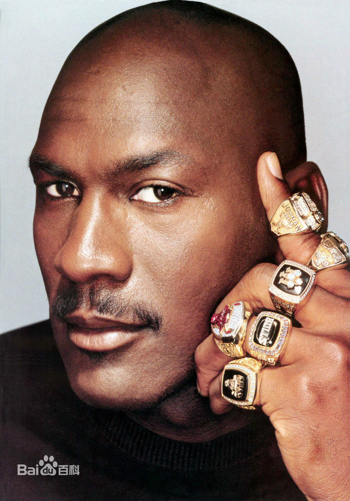
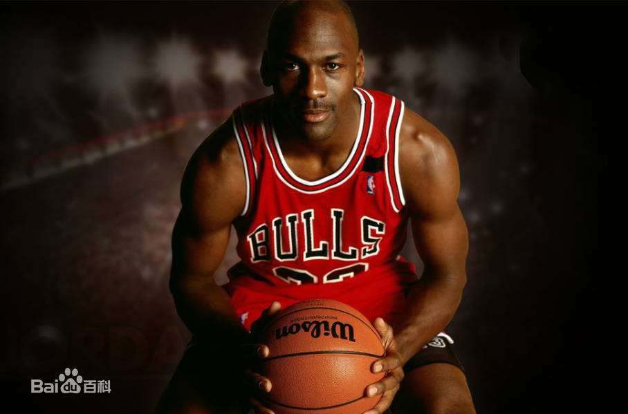
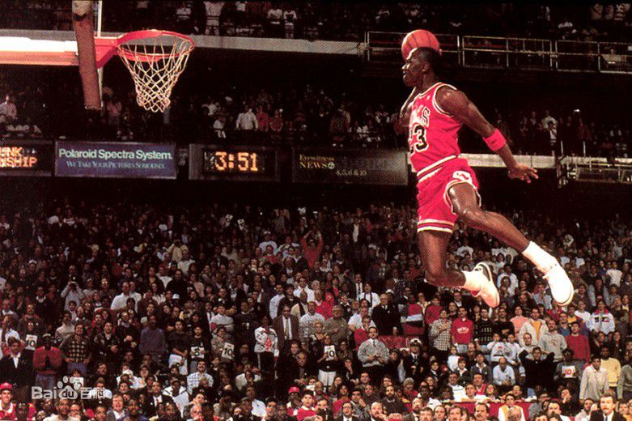
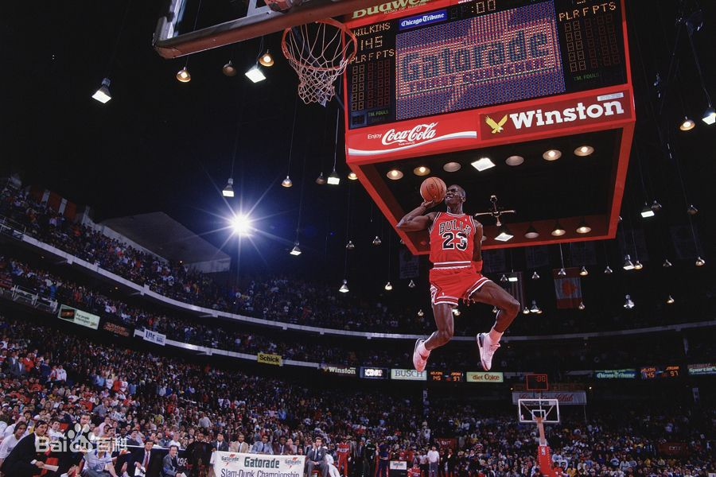

迈克尔·乔丹
Michael Jordan
迈克尔·乔丹（Michael Jordan），1963年2月17日生于美国纽约布鲁克林，前美国职业篮球运动员，司职得分后卫，绰号“飞人”（Air Jordan）
在1984年NBA选秀中[2] ，迈克尔·乔丹在第1轮第3位被芝加哥公牛队选中[2] ，职业生涯曾效力于芝加哥公牛队以及华盛顿奇才队[1] ，新秀赛季当选NBA年度最佳新秀[1] 。1986-87赛季，乔丹场均得到37.1分[1] ，首次获得NBA得分王称号。[1] 1991-93赛季，乔丹连续当选常规赛MVP以及总决赛MVP[2] （FMVP）[1] ，率领芝加哥公牛队3次夺得NBA总冠军[1] 。1993年10月6日因父亲被害而宣布退役[1] ，两年后宣布复出[2] 。1996年入选NBA50大巨星[3] 。[1] 1996-98赛季[1] ，乔丹获得个人职业生涯第10个（共10个）[1] NBA得分王、第5次（共5次）[1] 常规赛MVP，并再次[1] 率领公牛队3次（共6次）[1] 夺得NBA总冠军[1] ，自己当选共第6次总决赛MVP[1] 。1999年1月13日在劳资谈判失败后再次宣布退役[1] ，两年后在华盛顿奇才队再次宣布复出[1] 。迈克尔·乔丹的职业生涯年年入选NBA全明星阵容（共14次）[1] 并3次夺得NBA全明星MVP[1] ，[2] 10次入选NBA最佳阵容一阵[1] ，1985年入选NBA最佳阵容二阵[1] ，1988年当选NBA年度最佳防守球员，[1] 9次入选NBA最佳防守阵容一阵[2] ，3次荣膺NBA抢断王[1] ，2次荣获NBA全明星扣篮大赛冠军[2] ，1984年以及1992年获得奥运会金牌[2] 。
2003年4月16日，迈克尔·乔丹在职业生涯最后一场奇才主场对阵76人比赛的赛后[2] 正式宣布退役[1] 。他被认为是历史上最伟大的篮球运动员[3] 。2009年9月11日，迈克尔·乔丹入选奈·史密斯篮球名人纪念堂[2] 。
- 中文名 迈克尔·乔丹
- 外文名 Michael Jordan
- 别 名 Air Jordan（飞人）、MJ、篮球之神、帮主、老大
- 国 籍 美国
- 出生地 美国纽约市布鲁克林区
- 出生日期 1963年2月17日
- 毕业院校 北卡罗来纳大学
- 身 高 6英尺6英寸/1.98米
- 体 重 195磅/88公斤
- 运动项目 篮球
- 所属运动队 已退役
- 专业特点 得分、防守、领导能力超强
- 主要奖项 6届NBA总冠军、总决赛MVP（1991-93；1996-98）
-
- 6届NBA总冠军、总决赛MVP（1991-93；1996-98）
- 5届NBA常规赛MVP（1988；1991-92；1996；1998）
- 14届NBA全明星阵容（1985-93；1996-98；2002-03）
- 10届NBA最佳阵容一阵（1985-93；1996-98）
- 1988年NBA年度最佳防守球员、9次入选NBA最佳防守阵容一阵
早年经历
童年时期
1963年2月17日，迈克尔·乔丹出生在美国纽约布鲁克林区，五岁的时候，乔丹一家人便搬到了北卡罗来纳州，小时候的乔丹同父亲关系很好，乔丹扣篮时著名的吐舌动作就是来源于父亲做修理工作时的动作，那时的两人对棒球很是热衷。小时候的乔丹非常的淘气，在跟着哥哥喜欢上篮球后，乔丹业余时间全都耗在了球场上。[4]
高中时期
威尔明顿兰尼高中乔丹篮球生涯的起点，不过年幼的乔丹并不引人注目，第二年时，他的身高只有5尺11寸，又瘦又小的他被教练从一队降入二队。不过乔丹没有放弃，到了高三的时候，他入选了全美高中生阵容。[4]
大学时期
1982年3月29日，乔丹作为北卡罗莱那大学的一名新生，在NCAA联赛的决赛里投进制胜球，帮助北卡大学队以63比62的比分战胜了尤因率领的乔治城大学队。1982-83赛季，乔丹被《体育新闻》评为年度大学生球员及全美第一阵容队员。1983-84赛季，乔丹再次被《体育新闻》评为年度大学生球员及全美第一阵容队员。[1]
职业生涯
新秀赛季
1984年9月12日，在NBA选秀大会上，乔丹被芝加哥公牛队选中，在整个联盟新秀中，他排在第3位，他的前面分别是哈基姆·奥拉朱旺和萨姆·鲍伊。从这时候起，直到首次登顶NBA总冠军，乔丹就一直是单打独斗的典型。
乔丹在新秀赛季场均分得到28.2分，6.5个篮板，5.9个助攻，拿下了年度最佳新秀的称号，并入选NBA第二阵容。[5] 乔丹在自己的处子季后赛里，场均得到29.3分，5.8个篮板，8.5次助攻。[6] 但可惜球队1:3负与密尔沃基雄鹿队，被淘汰出局。[7]
成长阶段
乔丹的第二个赛季仅仅打了三场比赛，乔丹就因为左脚的一块骨头骨折而伤退，虽然被票选入全明星赛，但是未能出席。赛季末，乔丹重新回到球场。季后赛首轮，乔丹在公牛与凯尔特人的第二战中得到63分，打破了NBA季后赛的得分纪录，而那只是乔丹的第六场季后赛比赛，不过公牛在这场比赛经过中两个加时仍以131-135输给了凯尔特人，最终0-3遭淘汰。
从1986-87赛季开始，乔丹开始占据NBA纪录册。这一年，他在前7场比赛中场均37.1分，赛季场均达到了30分。乔丹连续9场得到40或以上的分数，创造联盟纪录。在全明星周末，他夺得了扣篮大赛冠军，不过在季后赛，公牛仍然被凯尔特人首轮淘汰出局。[5]
1987-88赛季，乔丹拿下了常规赛得分王，最佳防守球员，全明星MVP[9] ，常规赛最有价值球员。季后赛首轮，乔丹带领公牛淘汰了骑士，无奈第二轮1-4负于底特率活塞。
1988-89赛季，乔丹场均32.5分领衔联盟，同时场均贡献职业生涯新高的8.0个篮板和8.0次助攻。另外，他场均还有2.89次抢断，位列抢断榜第三。季后赛首轮和骑士的第五场，乔丹命中了绝杀球。
1989-90赛季揭幕前，公牛队请来了菲尔·杰克逊。在“禅师”杰克逊的指教下，公牛引进三角进攻。这个赛季，公牛55胜27负，创1971-72赛季以来队史最佳战绩。乔丹在和骑士的比赛中创造生涯最高得分69分。不过在1990年东部决赛中，公牛在七场鏖战中仍然输给了活塞。[5]
第一个三连冠
1990-91赛季，乔丹率领公牛一路高歌猛进，整个季后赛仅仅输了两场，乔丹率领公牛第一次夺得总冠军。这其中包括在东部决赛中横扫活塞报了一箭之仇，在总决赛主场先负一局的情况下直落四局击败湖人夺冠。乔丹场均得到31.4分、6.4个篮板、8.4次助攻，并捧起了他六个NBA总决赛最有价值球员奖杯中的第一个。[10]
1991-92赛季，乔丹场均得到30.1分，连续第2年同时获得常规赛MVP和总决赛MVP称号。季后赛首轮迎战迈阿密热队，乔丹场均45分，率领球队以3比0的总比分横扫对手。这个赛季乔丹再次率领芝加哥公牛夺得了总冠军。[1]
1993年，乔丹带领公牛在五次季后赛中四次战胜帕特里克·尤因率领的纽约尼克斯。在关键的第五场，乔丹打出了“三双”表现：29分、10个篮板和14次助攻。随后，公牛在六场内过关。在总决赛，乔丹在面对菲尼克斯太阳的六场比赛中创造了一项纪录：他场均得到了41.0分，成功夺得三连冠[5]
然而三连冠的喜悦没多久，乔丹就接到噩耗：他的父亲被谋杀。就在新赛季训练营开始前的10月6日[5] ，乔丹宣布退役，并准备开始棒球生涯。棒球是父亲从小激励他从事的运动，乔丹也最终加盟了美国职棒联盟。事实上，他在棒球场上并不太成功。[5]
人物评价
乔丹是神，因为上世纪的90年代是属于他的，而且每到比赛关键的时候，他都会用他的标志性动作吐舌头把答案告诉你。总冠军、MVP，他用这些荣誉影响了整整一代人，以至于其他运动项目的爱好者们，只能眼睁睁的看着乔丹把篮球这项运动的艺术提升到了新的高度。他是NBA历史上把球商、运动能力和竞争意识结合得最好的球员。他可以做任何事情，而至今没有任何一个球员做得比他更好。他曾连续三个赛季包揽得分王和抢断王。他的巨大影响力延续至今。[29-30] （ESPN评）
他在盐湖城一断一投绝杀谢幕，更将这份完美提升到极致。或许，身体素质和攻防技能要超越乔丹，是三十年之内可以期待的事，但要创造出一个像他那般完美的NBA生涯，却难上加难。[31] （《SLAM》评）
拥有惊人的身体素质的乔丹，可能是最强的得分手。在NBA史上还没有一个人可以像乔丹这样在攻防两端同样做的如此完美。乔丹同样还是一个队中的关键人物，一个值得信赖可以让他去投最后一球的人物。[32] （FOX体育专栏评）
乔丹是一个伟大的球员，不管他离开篮球场多久，他还是乔丹，他是一个聪明的球员，如果他调整好自己，他是最有威胁的球员。[33] （球员麦基评）
有三个人让我们背负了很多债务，前两个是魔术师约翰逊和拉里·伯德，他们开创了一个时代，将NBA变得更加出色。而乔丹则真正的将NBA提升到了另一个水准。（杰里·斯隆评）[34]
他是一个被神化的人。乔丹是我愿意以一切换取他一张照片的人，与他见面，给他一个拥抱是我的梦想，我常说如果我能见到他和卡斯特罗，我愿做一切事情。（马拉多纳评）
我觉得去叫乔丹是篮球历史上最伟大的球员对于那些先辈来说有些不太公平和现实。不过我知道乔丹实在很出色。（查尔斯·巴克利评）[34] 他不是我见过最有篮球天赋的球员，但他绝对是最有斗志、最执着的一个。（菲尔·杰克逊评）[3] 乔丹有着超凡的技巧，是最后时刻最强的竞争者，是完美的团队球员，一名永恒的关键时刻的刺客。（杰克·拉米赛评）。[34] 我记得很多关于乔丹在赛场上创造的伟大瞬间，他用投篮征服了世界，你很难想到他能够做的如此完美。（伍兹评）[34] 每一届名人堂成员都很特殊，这一点毫无疑问，但是这届名人堂却因为乔丹这位极具影响力的球星入驻而成为名人堂历史上最大的盛宴。虽然这届名人堂成员不只有乔丹伟大，但是显然他的加入让一切变得与众不同。（约翰·多拉维塔评）[34]